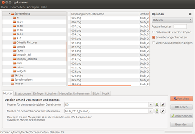
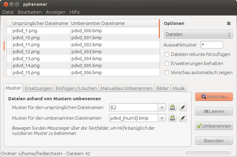

pyRenamer
Dieser Artikel wurde für die folgenden Ubuntu-Versionen getestet:
Ubuntu 16.04 Xenial Xerus
Ubuntu 14.04 Trusty Tahr
Zum Verständnis dieses Artikels sind folgende Seiten hilfreich:
pyRenamer  ist ein kleines Programm zum Umbenennen von Dateien. Es stellt umfangreiche Möglichkeiten zur Verfügung, um per Stapelverarbeitung einer beliebigen Anzahl von Dateien einen neuen Namen zu geben. pyRenamer nutzt das GUI-Toolkit PyGTK.
ist ein kleines Programm zum Umbenennen von Dateien. Es stellt umfangreiche Möglichkeiten zur Verfügung, um per Stapelverarbeitung einer beliebigen Anzahl von Dateien einen neuen Namen zu geben. pyRenamer nutzt das GUI-Toolkit PyGTK.
Installation¶
Das Programm ist Bestandteil der offiziellen Paketquellen. Zur Installation wird das folgende Paket benötigt [1]:
pyrenamer (universe)
 mit apturl
mit apturl
Paketliste zum Kopieren:
sudo apt-get install pyrenamer
sudo aptitude install pyrenamer
Benutzung¶
Bei Ubuntu-Varianten mit einem Anwendungsmenü existiert ein Programmstarter unter "Zubehör -> pyRenamer". In KDE4 ist der Eintrag unter "Dienstprogramme -> pyRenamer" zu finden. Alternativ kann der Befehl pyrenamer verwendet werden [2].
Die von pyRenamer verwendete Syntax wirkt im ersten Augenblick recht kompliziert. Hat man jedoch erst einmal die Anleitung studiert und ein paar Experimente gemacht, dann findet man sich schnell zurecht.

Über den Dateibaum lässt sich der Ordner auswählen, in dem sich die zu bearbeitenden Dateien befinden. Ist ein Ordner ausgewählt, so sieht man im Fenster auf der rechten Seite die darin befindlichen Dateien mit ihrem derzeitigen Dateinamen. Rechts daneben erscheint der neue Dateiname, wenn eine korrekte Syntax für eine Umbenennung eingegeben und anschließend die Schaltfläche "Vorschau" angeklickt wurde. Über "Bearbeiten -> alles auswählen" aus dem Menü des Programms oder die Tastenkombination Strg + A kann man alle Dateien zur Bearbeitung auswählen. Stimmt die Vorschau mit dem gewünschten Ergebnis überein, dann kann man die Umbenennung über den Knopf "Umbenennen" starten.
Will man rekursiv in einer Verzeichnisstruktur Dateien umbenennen, muss man zunächst über "Anzeigen -> Optionen" sich diese Möglichkeit ins Programmfenster holen. Alternativ kann man auch die Taste F9 drücken.
Möglichkeiten der Umbenennung¶
Über die Reiter im unteren Bereich des Programmfensters wählt man nun die gewünschte Funktion aus. Die Funktionen der einzelnen Reiter lassen sich zum großen Teil kombinieren und in einem Arbeitsschritt ausführen.
Die zahlreichen Bildschirmfotos zeigen Beispiele für die Einstellungsmöglichkeiten von jedem einzelnen Unterpunkt.
Muster¶
Dies ist die Standardmethode der Umbenennung, die in den meisten Fällen zum Einsatz kommt und die meisten Einstellmöglichkeiten bietet. Bleibt man mit dem Mauszeiger etwas länger auf einem der Eingabefelder, dann erhält man eine Kurzinfo, einen sog. Tooltip, der die möglichen Syntaxvarianten zeigt.
Im folgenden einfachen Beispiel wird bei den vorhandenen Dateien die Endung .jpg durch .bmp ersetzt.
Achtung!
Durch ein Umbenennen der Dateiendung wird lediglich der Dateiname geändert. Die Datei selbst wird nicht konvertiert!
Wie auf dem folgenden Bildschirmfoto zu sehen, wurde die Voreinstellung der ersten Zeile einfach auf {L} (Buchstaben) belassen. Das ist jedoch in diesem Fall nebensächlich, da der Zielname komplett angegeben wurde, ohne Bezug auf den Originalnamen zu nehmen. {num3} sorgt dafür, dass dem neuen Dateinamen nach pdvd_ jeweils eine aufsteigende Nummer, beginnend mit 000 angehängt wird, wie es auch in der Vorschau zu sehen ist.

Das nächste Beispiel ist etwas komplexer. Hat man beispielsweise drei Dateien mit den folgenden Namen:
Ubuntu K01S01 Feisty Fawn 7.04.png Ubuntu K02S02 Gutsy Gibbon 7.10.png Ubuntu K03S03 Hardy Heron 8.04.png
und möchte diese in die folgende Form umbenennen
01x01 - Ubuntu - Feisty.png 02x02 - Ubuntu - Gutsy.png 03x03 - Ubuntu - Hardy.png
so nutzt man folgenden Code. In das Eingabefeld für "Muster für den ursprünglichen Dateinamen" kommt diese Zeile
{C} K{C}S{C} {C}{X}.pngund in das Eingabefeld für "Muster für den umbenannten Dateinamen" kommt diese Zeile
{2}x{3} - {1} - {4}.pngDie {C} stehen jeweils für eine Zeichenfolge ohne Leerzeichen, im Fall der ersten Datei also für die Zeichenketten "Ubuntu", "01", "01" und "Feisty". Das {X} steht für eine Zeichenkette mit Leerzeichen, in diesem Fall also "Fawn 7.04".
In der zweiten Befehlsfolge stehen die Zahlen in den geschweiften Klammern für die Stelle der Syntaxelemente, die in der ersten Zeile "markiert" wurden. So steht {2} für die zweite durch eine geschweifte Klammer markierte Zeichenkette. Bei der ersten Zeile wird für {2} also "01" eingesetzt, bei der zweiten Zeile wird an Stelle der {2} jedoch "02" in den neuen Dateinamen eingesetzt. Eine {5} würde für die Zeichenfolge stehen, die durch {X} markiert ist.
Ersetzungen¶
"Ersetzungen" bieten die Möglichkeit, im Dateinamen bestimmte Zeichen durch andere zu ersetzen.
Klickt man "Leerzeichen" an, so kann man auswählen, ob man die Leerzeichen im Dateinamen durch Unterstriche oder Punkte ersetzen will oder umgekehrt, also alle Punkte oder Unterstriche durch Leerzeichen ersetzen.
Mit "Ersetzen" lässt sich ein einzelnes Zeichen oder eine Zeichenkette durch ein (anderes) einzelnes Zeichen oder eine Zeichenkette ersetzen.
"Großschreibung" sorgt dafür, dass entweder alle Zeichen klein ("Alle in Kleinbuchstaben"), alle Zeichen groß ("Alle in Großbuchstaben"), nur das jeweils erste Zeichen des Dateinamens groß ("Erster Buchstabe groß") oder das jeweils erste Zeichen jeder Zeichenkette ("Erster Buchstabe jeden Wortes groß") geschrieben werden.
"Akzente entfernen"
Die vier Punkte können beliebig kombiniert und in einem Arbeitsgang ausgeführt werden.
Einfügen/Löschen¶
Der Punkt "Einfügen" fügt Zeichen an einer bestimmten Stelle ein. Hierzu gibt man bei "Einfügen" das einzufügende Einzelzeichen oder eine Zeichenkette an und wählt aus, an welcher Stelle diese eingefügt werden soll. Durch das Setzen des Hakens bei "oder am Ende" wird die Zeichenfolge ans Ende des neuen Dateinamens angehängt. Hier sollte man natürlich darauf achten, dass man nichts hinter eine gegebenenfalls notwendige Dateiendung schreibt.
Bei "Löschen" gibt man nur an, welche Zeichen man löschen möchte. Will man z.B. die Zeichen 4 und 5 von 7 vorhandenen Zeichen löschen, so gibt man im ersten Feld 4 und im zweiten Feld 5 ein. Will man nur ein einzelnes Zeichen löschen, so gibt man in beiden Feldern die gleiche Stelle an.
Manuelles umbenennen¶
Mit dieser Funktion kann man einzelne Dateinamen manuell umbenennen. Diese Funktion entspricht der Umbenennung, wie sie auch mit jedem Dateimanager und bei vielen Programmen aus dem Kontextmenü heraus möglich ist.
Bilder bzw. Musik¶
Die beiden Punkte "Bilder" und "Musik" entsprechen von der Syntax her dem Reiter "Patterns". Hier kann man die Metadaten und die Dateinamen verändern. Bei Bilddateien sind die Metadaten die Exif-Informationen und bei Musikdateien die Daten der ID3-Tags.
Links¶
Projektseite
- im Internet-ArchivDateimanagement
 Weitere Programme mit grafischer Oberfläche zum Umbenennen
Weitere Programme mit grafischer Oberfläche zum Umbenennen
- Erstellt mit Inyoka
-
 2004 – 2017 ubuntuusers.de • Einige Rechte vorbehalten
2004 – 2017 ubuntuusers.de • Einige Rechte vorbehalten
Lizenz • Kontakt • Datenschutz • Impressum • Serverstatus -
Serverhousing gespendet von